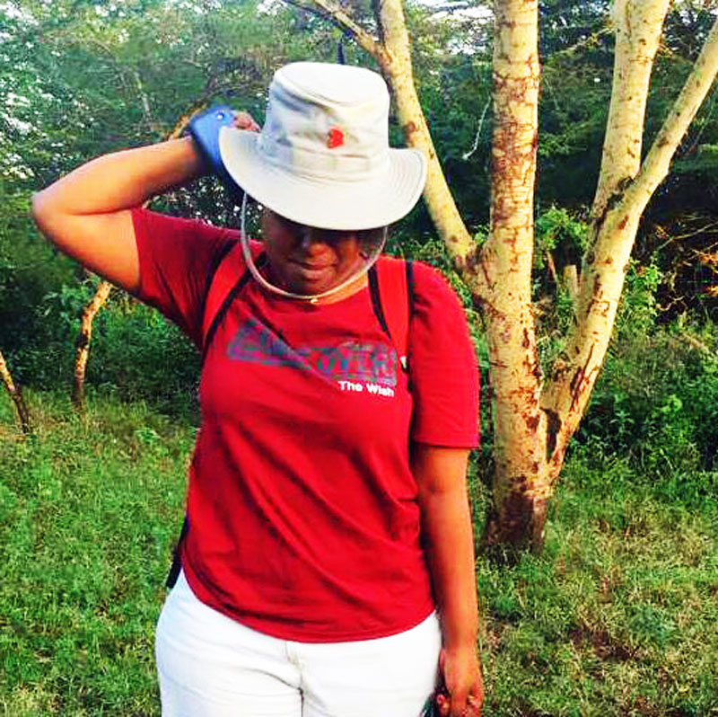

Makundi ya Tabia: Jinsi tabia inavyobadilika kuwa sifa ya mtu.
Usawa.
Ni kweli kuwa wanadamu wote tunatokana na mfumo mmoja na tunaanza maisha yetu kwa kutungwa mimba. Baada ya hapo, tunapitia mabadiliko kadhaa wakati tukikua katika tumbo la mwanamke, na hatimaye tunazaliwa katika hali ya uchanga. Hatua hii ya awali, kutoka kwa kutungwa mimba hadi kuzaliwa, ni moja ambayo sisi sote tunapitia kwa usawa. Hii ndiyo sababu tunasema “Binadamu wote ni sawa.” Katika hatua hii, tunashiriki usawa kwa sababu sisi sote tunapitia mchakato huo.
Hata hivyo, baada ya kuzaliwa, kila mmoja wetu huanza kujenga upekee wake mwenyewe.

Hii inamaanisha kuwa, licha ya kuwa sisi ni sawa katika asili yetu ya kibinadamu, tunatofautiana katika tabia, vipaji, mitazamo, na sifa zingine za kipekee. Kila mmoja wetu ana upekee wake mwenyewe ambao hutofautiana na wengine. Hii inathibitisha kuwa ingawa tunashiriki asili moja, lakini upo utofauti wa ubunifu na tabia katika jamii yetu. Upekee wetu mara nyingi unachangiwa na mambo kadhaa ambayo tumetaja. Hapa ninafafanua zaidi kuhusu mambo hayo:
Malezi: Jinsi tunavyolelewa na wazazi wetu na jamii inayotuzunguka ina athari kubwa katika kuunda upekee wetu. Tabia, maadili, na maoni tunayojifunza katika malezi yetu yanaweza kuathiri mtazamo wetu na njia tunazochukua katika maisha. Hii inaweza kusababisha tofauti kubwa kati yetu.
Taaluma: Elimu na taaluma tunayopata inaweza kuathiri jinsi tunavyoona na kuelewa ulimwengu. Maeneo tofauti ya masomo, kazi, na fani huweka msingi wa maarifa yetu na ujuzi. Hii ina athari kubwa katika jinsi tunavyochangia katika jamii na jinsi tunavyotumia upekee wetu katika uwanja wetu wa kitaaluma.
Mazingira: Mazingira tunayoishi nayo, iwe ni mji mkuu, vijijini, au sehemu nyingine, yana athari kubwa katika kujenga upekee wetu. Utamaduni, mila, na tamaduni za eneo hilo zinaweza kuathiri tabia zetu, mitazamo yetu, na njia tunazoshughulika na mambo. Kwa hiyo, tofauti katika mazingira yetu inaweza kusababisha tofauti katika upekee wetu.
Imani za Dini, Mila, nk.: Imani za kidini, mila, desturi na maadili ambayo tunafuata pia yanachangia katika kuunda upekee wetu. Imani zetu za kidini na maadili tunayoyazingatia huathiri maoni yetu, maisha yetu ya kiroho, na jinsi tunavyoshirikiana na wengine. Hii inaweza kusababisha tofauti kubwa katika mtazamo wetu wa maisha na mwenendo wetu.
Kwa hiyo, ni kweli kwamba tofauti zetu za upekee zinachangiwa na mambo kama malezi, mazingira, taaluma, na imani za kidini au mila. Hii inatufanya tuwe na utegemezi kwa kila mmoja na kutambua kuwa kwa kuwa na watu wenye tabia tofauti, tunaweza kujifunza, kusaidiana, na kujenga jamii yenye nguvu zaidi.
Uumbaji wa Mungu.
Ni kweli kwamba tofauti zetu za tabia na imani zinazosababishwa na mambo kama malezi, mazingira, taaluma, na urithi wa kitamaduni zinaweza kusababisha mgawanyiko wa kimtazamo miongoni mwa watu. Hii ni jambo linalojitokeza katika masuala mbalimbali, ikiwa ni pamoja na suala la uumbaji wa mwanadamu na dunia. Mgawanyiko huu wa kimtazamo unaweza kuleta mivutano, migongano, na kutofautiana katika maoni na mtazamo wetu kuhusu uumbaji wa mwanadamu na dunia. Ni muhimu kuelewa kuwa hizi ni imani za kibinafsi na kila mtu ana haki ya kuwa na mtazamo wake. Ni muhimu kuwa na mjadala wa wazi na wa heshima ili kuweza kuelewa na kuheshimu tofauti hizo, huku tukizingatia ushahidi wa kisayansi na kuendeleza uelewa wa pamoja.

Muhimu zaidi, ni kutambua kuwa licha ya tofauti zetu za imani na mtazamo, sisi sote ni wanadamu na tunashiriki asili moja. Tunaweza kujenga jamii yenye maelewano na kuheshimiana kwa kuweka kando tofauti zetu za kimtazamo na kuzingatia mambo ambayo tunaweza kushirikiana kwa ajili ya maendeleo yetu na ustawi wa pamoja.
Umoja, Muungano, Mshikamano, Ushirikiano.
jamii zote duniani zimepitia vipindi tofauti na hali ngumu ambazo zimeathiri maisha ya watu. Uzoefu huu umesababisha watu kutafuta njia za kushughulikia changamoto hizo na kuunda mtindo wa maisha (lifestyle) ambao unalingana na mazingira yao na hali zao. Mtindo wa maisha ni njia ya kuishi, mtazamo, na tabia ambayo watu wanachagua kufuata katika maisha yao ya kila siku. Kwa kuzingatia uzoefu na kumbukumbu wanazopata, jamii zimeunda mifumo ya kijamii na kiutamaduni ambayo inajumuisha misingi kama muungano, umoja, mshikamano, ushirikiano, na shirikisho. Hizi ni kanuni ambazo zinaweza kuwa msingi wa mtindo wa maisha katika jamii fulani.
Muungano (Union): Hii inahusu kuungana pamoja kwa lengo la kufikia malengo yanayofanana. Watu wanaweza kuunda muungano au kikundi kwa ajili ya maslahi ya pamoja, kulinda haki zao, au kufikia mabadiliko katika jamii. Hii inaweza kuhusisha vyama vya wafanyakazi, vyama vya wakulima, na vikundi vya kijamii vinavyopigania maslahi ya pamoja.
Ushirikiano (Collaboration): Ushirikiano unahusisha kufanya kazi kwa pamoja na kushirikiana ili kufikia malengo ya pamoja. Watu wanaweza kushirikiana katika miradi ya kimaendeleo, kibiashara, au katika kutoa suluhisho la matatizo yanayowakabili. Ushirikiano unaimarisha uwezo wa kufanya kazi kama timu na kuleta matokeo bora zaidi.
Mshikamano (Solidarity): Mshikamano unahusisha kuonyesha msaada na kujali kwa wengine katika jamii. Watu wanaweza kuonyesha mshikamano kwa kusaidia wale walio katika mazingira magumu au kuunga mkono haki za binadamu na usawa wa kijamii. Hii inalenga kujenga jamii inayojali na inayothamini kila mwanachama.
Umoja (Unity): Umoja unahusisha watu kuunganisha nguvu zao na kufanya kazi kwa pamoja kuelekea lengo la pamoja. Hii inaweza kujumuisha kusaidiana, kushirikiana, na kuimarisha uhusiano kati ya watu ili kujenga jamii yenye umoja na mshikamano.
Shirikisho (Federation): Shirikisho ni umoja au muungano wa vikundi au jamii ndogo ambazo zinafanya kazi pamoja
Jitihada zote hizo za kuishi pamoja kwa amani na upendo, huku tukivumiliana na tofauti za tabia zetu, ni sehemu ya lengo la kuunda jamii inayojumuisha kila mtu na inayokuza usawa. Tolerance, au uvumilivu, ni msingi muhimu katika kufanikisha lengo hilo. Inahitaji kuwa na uelewa na heshima kwa tofauti za tabia, imani, na mitazamo ya watu wengine. Vilevile, “Unity out of our diversity” (umoja kutokana na tofauti zetu) ni dhana muhimu katika kujenga jamii ambayo inathamini na kuheshimu tofauti za watu. Inatambua kuwa kila mmoja wetu ana upekee wake na mchango wake katika jamii, na kwamba tunaweza kuwa na umoja na mshikamano kwa kusaidiana na kushirikiana. Katika jitihada za kufikia amani, upendo, na ustarabu, jamii huunda sheria, sera, miongozo, na elimu. Sheria na sera zinakuwa na lengo la kudumisha haki na usawa, kulinda haki za binadamu, na kusimamia mahusiano na tabia katika jamii. Miongozo inaweza kuwa na kanuni za maadili na maadili ya kijamii ambayo yanahimiza uhusiano mzuri na maisha ya kijamii. Elimu ni muhimu katika kuleta mabadiliko na ustaarabu katika jamii. Elimu ina jukumu la kuelimisha watu kuhusu umuhimu wa kuvumiliana, kuheshimiana, na kuishi kwa amani. Inasaidia kuongeza uelewa wa watu kuhusu tofauti za kitamaduni, kidini, na kijamii.
Elimu pia inasaidia kujenga uelewa wa kisayansi na ufahamu wa mazingira, na hivyo kuchochea mabadiliko chanya katika tabia na mitazamo. “Makundi ya Tabia” ni suala muhimu linalochunguzwa katika muktadha huu. Inaelezea tofauti za tabia na mitindo ya watu ndani ya jamii. Kwa kutambua tofauti hizi, tunaweza kuelewa na kuheshimu watu wengine, na pia kujenga mazingira ya kuvutia zaidi ya kijamii. Katika suala hili, ni muhimu kukuza uelewa, uvumilivu, na kujenga umoja kati ya makundi ya tabia. Kupitia mazungumzo, kubadilishana mawazo, na kuunganisha nguvu, tunaweza kujenga jamii inayothamini tofauti na kusonga mbele kuelekea lengo la pamoja la amani, upendo, na ustaarabu. Katika jamii iliyochanganyika na tofauti za mila, desturi, na tamaduni, ni muhimu kupata muda wa kujifunza jinsi ya kuishi kwa amani na kuheshimu watu wengine. Hekima ni muhimu katika kuongoza mwenendo wetu na kufanya maamuzi sahihi katika mazingira hayo. Kujifunza njia nyepesi ya kuishi na jamii hiyo inahitaji utayari wa kujifunza na kuelewa tamaduni, mila, na desturi za watu wengine. Hii inaweza kujumuisha kujifunza lugha yao, kujua taratibu zao za kijamii na kujua mambo yanayoheshimiwa na kupendwa na jamii hiyo. Kwa kufanya hivyo, tunaweza kuepuka makosa ya utamaduni na kuwa na uhusiano mzuri na watu wengine.
Tabia za watu.
Ni kweli kwamba tabia za watu zina pande zote mbili, nazo zinaweza kuwa na sifa nzuri na sifa mbaya. Ni muhimu kutambua kwamba tabia ya mtu haiwezi kutathminiwa kwa msingi wa tukio moja au mazingira fulani pekee. Kuweza kuelewa tabia ya mtu kwa undani, inahitaji muda wa kutosha na uzoefu wa karibu na mtu huyo. Ni vigumu kufanya hitimisho kamili juu ya tabia ya mtu kwa kutegemea tukio moja kama safarini, sherehe au msiba. Watu huwa na mazingira tofauti-tofauti ambayo yanaweza kuathiri jinsi wanavyojitokeza katika tukio hilo maalum. Hivyo, ili kuweza kuelewa tabia ya mtu, ni muhimu kuwa na muda wa kutosha wa kushirikiana na mtu huyo, kuwasiliana nae katika mazingira mbalimbali, na kuona jinsi anavyoshughulikia mambo tofauti na watu tofauti. Kuweka muda wa kutosha wa kujifunza kuhusu mtu inaweza kujumuisha kuzungumza naye, kufanya shughuli pamoja, kushiriki katika mijadala, na kuchunguza jinsi anavyoshughulikia changamoto na mafanikio katika maisha yake. Kwa kufanya hivyo, unaweza kupata uelewa mzuri wa tabia yake kwa kuchunguza tabia zake katika mazingira tofauti na katika vipindi tofauti. Ni muhimu pia kuwa na ufahamu wa kwamba watu ni wenye utofauti na wanaweza kubadilika. Tabia za mtu zinaweza kubadilika kulingana na ukuaji wao, uzoefu mpya, na mabadiliko katika maisha yao. Hivyo, ni muhimu kuwa na ufahamu wa mabadiliko hayo na kuweka nafasi ya kuelewa na kukubali tabia mpya zinazojitokeza.

Makundi makuu ya Tabia.
- MELANKOLIKI
- KARELIKI
- SANGWINI
- FLAGMETIKI
Melankoliki.
Ni muhimu kuelewa kwamba maelezo juu ya tabia ya Melankoliki ni ya kawaida na siyo uwakilishi kamili wa kila mtu mwenye tabia hiyo. Watu ni wenye utofauti na tabia zao zinaweza kuwa na mchanganyiko wa sifa tofauti. Ni muhimu kutambua kuwa kila mtu ni mtu binafsi na anaweza kuwa na mchanganyiko wa tabia na sifa zote zilizoorodheshwa, kwa viwango tofauti. Hata hivyo, kuhusiana na jinsi ya kuchukuliana na watu wenye tabia ya Melankoliki, kuna mambo kadhaa unayoweza kuzingatia:
Kuwasikiliza: Jaribu kusikiliza kwa makini wanachosema na maoni yao. Heshimu mawazo yao na fanya nao majadiliano kwa busara.
Kuwaheshimu: Waheshimu na kuthamini maoni na mipango yao. Onesha kujali na kuwapa nafasi ya kujisikia kuwa, mawazo yao yanaaminiwa.
Kuepuka migogoro: Epuka kujaribu kushindana au kuwakosoa hadharani. Inaweza kuzidisha uhasama na kufanya uhusiano kuharibika.
Kuwa na uvumilivu: Elewa kwamba watu wenye tabia ya Melankoliki wanaweza kuwa na msimamo mkali na hawakubali kosa kirahisi. Kuwa mvumilivu na usijaribu kuwashawishi mara moja. Badala yake, jenga uhusiano wa heshima na utafute njia ya kufikia makubaliano.
Kuwa na ufahamu wa mapungufu yao: Elewa kwamba watu wenye tabia ya Melankoliki wanaweza kuwa na mapungufu kama vile kutokuwa wepesi kusamehe au kushindwa kukabili ukweli. Kuwa na subira na uelewa, lakini pia wasaidie kuona upande mwingine wa mambo.
Kujenga mazingira ya ushirikiano: Jaribu kujenga mazingira ambapo kila mtu anahisi kushirikiana na kuchangia. Fanya kazi kwa pamoja na kuelezea umuhimu wa ushirikiano na umoja.
Kumbuka, tabia za watu ni tofauti na unapofanya kazi na watu wenye tabia mbalimbali, ni muhimu kuwa na uelewa na kujaribu kuweka mazingira ya heshima na ushirikiano.
Sangwini.
Ni muhimu kuelewa kwamba maelezo juu ya tabia ya Sangwini ni ya kawaida na siyo uwakilishi kamili wa kila mtu mwenye tabia hiyo. Watu ni wenye utofauti na tabia zao zinaweza kuwa na mchanganyiko wa sifa tofauti. Kila mtu ni mtu binafsi na anaweza kuwa na mchanganyiko wa tabia na sifa zote zilizoorodheshwa, kwa viwango tofauti. Hata hivyo, kuhusiana na jinsi ya kuchukuliana na watu wenye tabia ya Sangwini, kuna mambo kadhaa unayoweza kuzingatia:
Kuepuka kuchukua mambo kwa uzito sana: Watu wenye tabia ya Sangwini mara nyingi hufanya utani hata katika mambo ya msingi. Epuka kuwa na msimamo mkali au kuwa na hisia kali kwa kila mizaha wanayofanya.
Kukubali utani na mizaha: Elewa kwamba watu wenye tabia ya Sangwini wanapenda utani na mizaha. Kuwa tayari kuichukulia na kuikubali kwa furaha na uelewa.
Kuwa wazi na mipaka: Eleza kwa wazi mipaka yako na kile unachokubali katika utani na mizaha. Heshimu na jenga mawasiliano ya wazi kuhusu nini ni sawa na nini si sawa kwako.
Kuwa na uvumilivu: Kumbuka kwamba watu wenye tabia ya Sangwini wanaweza kuwa na mapungufu kama vile kutokuwa waaminifu au kuwa wazungumzaji kupita kiasi. Kuwa na uvumilivu na uelewa, lakini pia kuwa na ukweli na kuwasaidia kuona upande mwingine wa mambo.
Kuepuka kushindana na kushindwa: Watu wenye tabia ya Sangwini mara nyingi wana kiu ya ushindani na kuwa katikati ya taharuki. Epuka kujaribu kushindana nao kwa njia ya utani au kufanya mizaha inayolenga kuwashinda. Badala yake, onyesha kuwa wewe ni mtu wa kusaidia na kushirikiana.
Kuwa makini na maneno: Watu wenye tabia ya Sangwini mara nyingi wanazungumza sana na wanaweza kuwa wagosi wa maneno. Kuwa makini na ushauri wao na pia uwe makini kuweka mipaka ya usiri na kutokubaliana na upotoshaji wa taarifa.
Kumbuka, tabia za watu ni tofauti na unapofanya kazi na watu wenye tabia mbalimbali, ni muhimu kuwa na uelewa na kujaribu kuweka mazingira ya heshima na ushirikiano.
Kareliki.
Ni muhimu kutambua kwamba sifa na udhaifu juu ya watu wenye tabia ya Kareliki ni maelezo ya jumla na hayawakilishi kila mtu mwenye tabia hiyo. Watu ni tofauti na wanaweza kuwa na mchanganyiko wa tabia na sifa tofauti. Hata hivyo, kuhusiana na jinsi ya kuchukuliana na watu wenye tabia ya Kareliki, unaweza kuzingatia mambo yafuatayo:
Kuwa mvumilivu: Watu wenye tabia ya Kareliki huchukua muda mrefu katika kufanya maamuzi na kushughulikia mambo. Kuwa mvumilivu na uelewe kwamba wanapenda kupima na kufikiria mambo kwa undani. Epuka kusukuma maamuzi au kuchukua hatua haraka bila kuwapa nafasi ya kufikiria kwa kina.
Kuwa mwongozo na msaidizi: Watu wenye tabia ya Kareliki wanaweza kukabiliwa na wavivu wa kufanya kazi zenye changamoto nyingi au kukosa ujasiri wa kufanya maamuzi. Kuwa mwongozo na msaidizi kwao kwa kuwasaidia kuona umuhimu wa kukabiliana na changamoto na kuwasaidia katika mchakato wa kufanya maamuzi.
Kuwa mshawishi: Watu wenye tabia ya Kareliki mara nyingi huwa na uwezo wa kuwashawishi wengine na kuwa na ushawishi mkubwa katika jamii. Tumia uwezo wao wa kushawishi na kuwaunga mkono katika mipango na maamuzi yao. Hakikisha unaelezea wazi faida na matokeo chanya ya kile unachojaribu kuwashawishi.
Kuwa na uvumilivu na uelewa: Watu wenye tabia ya Kareliki mara nyingi hawafanyi maamuzi haraka na wanaweza kuwa wavivu katika kazi fulani. Kuwa na uvumilivu na uelewa kwamba kila mtu ana njia yake ya kufanya mambo na wakati mwingine wanahitaji muda zaidi. Epuka kuwashinikiza au kuwahukumu.
Kujenga mazingira ya kujifunza: Watu wenye tabia ya Kareliki wanapenda kujifunza na kupata habari kwa undani. Kuwa na mazungumzo yenye mada zinazowahimiza kujifunza na kutoa fursa ya kushiriki katika majadiliano yenye akili na ufahamu. Weka mazingira yanayowahamasisha kuendelea kujifunza.
Kuthamini uwezo wao: Watu wenye tabia ya Kareliki mara nyingi wana uwezo mkubwa wa kufikiri na kujadili kwa ufasaha. Thamini uwezo wao.
Ni muhimu pia kukumbuka kwamba kila mtu ni tofauti, na kila uhusiano unapaswa kujengwa kwa msingi wa maelewano na kuheshimiana.
Flagimetiki.
Ni muhimu kutambua kwamba sifa na udhaifu juu ya watu wenye tabia ya Flagimetiki ni maelezo ya jumla na hayawakilishi kila mtu mwenye tabia hiyo. Watu ni tofauti na wanaweza kuwa na mchanganyiko wa tabia na sifa tofauti. Hata hivyo, kuhusiana na jinsi ya kuchukuliana na watu wenye tabia ya Flagimetiki, unaweza kuzingatia mambo yafuatayo:
Kujenga uaminifu: Watu wenye tabia ya Flagimetiki wanajali sana uaminifu. Ili kujenga uhusiano mzuri nao, hakikisha kuwa mwaminifu kwao na kuheshimu siri zao. Epuka kusambaza habari za siri au kuvunja uaminifu wao. Thamini sana uaminifu na ahadi zako kwao.
Kuwa msaada na kuwapa faragha: Wakati mwingine, watu wenye tabia ya Flagimetiki wanahitaji msaada au faragha. Onesha kwamba unapatikana kwa ajili yao na waweze kuongea nawe wakati wanapojisikia tayari kufanya hivyo. Kuwa na subira na uelewa katika kutoa msaada wako.
Kuwa mvumilivu na mwenye heshima: Watu wenye tabia ya Flagimetiki wanathamini faragha na uhuru wao. Kuwa mvumilivu na mwenye heshima kuhusu ukimya na siri zao. Epuka kuwafuatilia sana au kuwauliza maswali mengi yanayoweza kuwakera.
Kuwa mshirika mwaminifu: Watu wenye tabia ya Flagimetiki wanahitaji kuwa na mshirika mwaminifu na mwenye kujali. Kuwa mtu ambaye wanaweza kutegemea na ambaye hawatakuwa na hofu ya kushirikiana naye. Onesha ukaribu na kuonesha kuwa wewe ni mtu wanayeweza kumwamini.
Kuwasaidia kujenga ujasiri: Watu wenye tabia ya Flagimetiki mara nyingi wanaogopa na hawajiamini. Kuwa msaada kwao katika kujenga ujasiri wao kwa kuwatia moyo na kuwaunga mkono. Wasaidie kuona thamani yao na kuwapa fursa za kujitokeza na kufanikiwa.
Kuwa mwenye huruma: Upweke na wasiwasi mara nyingi huwakumba watu wenye tabia ya Flagimetiki. Kuwa mwenye huruma na kuwaelewa. Onesha kwamba unajali na kuwa tayari kuwasaidia katika wakati wa mahitaji yao.
Ni muhimu pia kukumbuka kwamba kila mtu ni tofauti, na kila uhusiano unapaswa kujengwa kwa msingi wa maelewano na kuheshimiana.
Dakika 10 za kutambua tabia ya mtu.
Kutambua tabia za watu katika matukio mafupi kama vile katika usafiri wa umma, sokoni, au mikutano ya hadhara ni ujuzi unaoweza kujifunza na kuboreshwa. Hapa kuna baadhi ya mbinu ambazo zinaweza kukusaidia kutambua tabia za watu kwa haraka katika matukio hayo:
- Sikiliza kwa makini: Weka masikio yako wazi na sikiliza mazungumzo na tabia ya watu wanaokuzunguka. Majadiliano yao na namna wanavyojibu maswali yanaweza kukupa mwelekeo juu ya mtu huyo na tabia yake.
- Tazama lugha ya mwili: Angalia jinsi watu wanavyojiendesha kimwili. Je, wanatoa ishara za kujiamini au wanaonekana kuwa na wasiwasi? Je, wanashiriki kikamilifu katika mazungumzo au wanajitenga? Lugha ya mwili inaweza kutoa dalili nyingi kuhusu mtu na tabia yake.
- Angalia jinsi wanavyoshughulikia mazingira yao: Je, wanajali mazingira yao na wengine? Je, wanaheshimu sheria na kanuni za usafiri au eneo husika? Watu wenye tabia tofauti watashughulikia mazingira yao kwa njia tofauti, kama vile kuwa na nidhamu au kutokujali.
- Tathmini mawasiliano yao: Je, wanawasiliana kwa upole au kwa ukali? Je, wanaweka mazingira ya mazungumzo kuwa ya kirafiki au wanazua utata na mzozo? Namna watu wanavyowasiliana inaweza kutoa wazo juu ya tabia zao na jinsi wanavyoshughulikia mambo.
- Ona jinsi wanavyowashughulikia wengine: Angalia jinsi watu wanavyowatendea wengine wanaowazunguka, kama vile madereva wa daladala, wauzaji sokoni, au washiriki wa mikutano. Je, wanajali na kuonyesha heshima au wanakuwa wasiwasi na wenye kiburi? Hii inaweza kukupa ufahamu juu ya jinsi wanavyoshughulikia uhusiano na wengine.
Hata hivyo, ni muhimu kuzingatia kwamba tabia za watu hazijawekwa katika makundi ya kudumu na kwamba watu ni tofauti. Ni vyema kutumia mbinu hizi kama mwongozo wa awali tu na kutoa fursa ya kufahamiana zaidi ili kupata picha kamili ya mtu na tabia yake.
Hitimisho.
Kadhalika, ni muhimu kuchangia katika jamii na kuleta mabadiliko chanya. Kwa kushiriki elimu, matendo mema, na fikra chanya, tunaweza kusaidia kuboresha jamii na kuifanya iwe njema zaidi. Hii inaweza kujumuisha kuelimisha wengine kuhusu utamaduni wetu, kushiriki katika shughuli za kijamii, na kusaidia katika miradi ya maendeleo na huduma za jamii. Kwa kufuata kanuni hizi, tunaweza kuishi kwa amani na kuwa sehemu salama ya jamii iliyochanganyika.

Hatuwezi kujitenga na jamii tunayoishi, na hivyo ni muhimu kujenga uelewa na ujuzi wa kuishi pamoja na watu wenye mila na tamaduni tofauti. Kwa kufanya hivyo, tunachangia kujenga jamii yenye mshikamano, uvumilivu, na amani.
Read Related Posts: